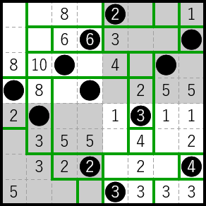
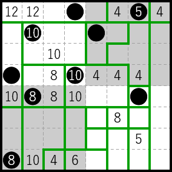
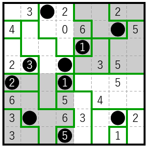
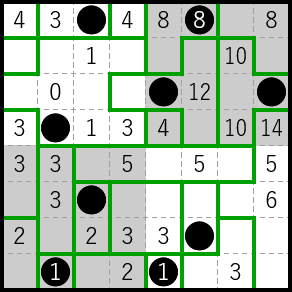
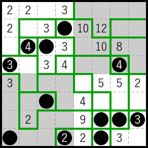
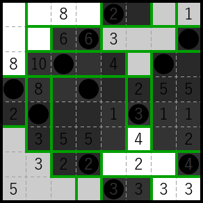
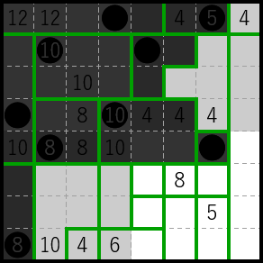
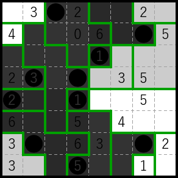
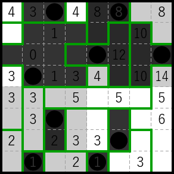
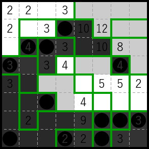

Solution: Divide and Conquer
Answer: BOROUGHS
Written by Lewis Chen and Anderson Wang
We are presented with a collection of 6 “Divide and Conquer” puzzles in an interface inspired by puzz.link’s database. In each puzzle, we can draw in some subset of edges and have the interface check whether it’s correct. Playing around with one of the five smaller 8×8 puzzles, we can notice a couple things:
- There is a “base rule” that the grid has to be divided into regions with no extraneous edges. We can see this because if there are any extraneous edges, clicking any check button will fail and highlight those edges in red.
- Assuming the base rule is satisfied, sometimes the checker highlights in red one or more regions, and sometimes it highlights one or more numbers. These are presumably the regions/numbers that do not follow the rules.
We can now use trial and error to gradually deduce what the rules are from the output of the checker. It turns out that:
- The rules are different in different quadrants of the puzzles.
- There are two kinds of rules: “global” rules that put a constraint on the shapes/layout of the regions, and “local” rules that tell you what the numbers mean.
- If a region has at least one square in the quadrant, then it is subject to the rules of that quadrant. If a region spans multiple quadrants, then it must satisfy all of their rules.
- Within each quadrant, the global rule is checked before the local rule. So, if any regions don’t follow the global rule, those get highlighted in red, and if all regions satisfy the global rule, then any numbers that don’t follow the local rule get highlighted.
As we gradually discover how more and more quadrants work, we can see that there are a limited set of possible global and local rules, and each quadrant mixes and matches one of each. The possible global rules are:
- Regions must be rectangles.
- Regions must have distinct areas.
- Regions cannot include 4 consecutive squares in a row horizontally or vertically (it is okay for a region to contain more than 4 squares in a row/column as long as there aren’t 4 consecutive squares).
- Regions must be a single path without any “loops”. That is, you can assign a “head” and “tail” to the region and walk from the head to the tail through all other squares of the region without the path ever touching itself orthogonally (diagonal touching is okay).
- You cannot have 3 regions touch at a single point (i.e. no “T-junctions”). Or equivalently, you can color the regions with two colors such that no two regions of the same color touch.1
The possible local rules are:
- A number gives the area of the region it is contained in.
- A number gives the perimeter of the region it is contained in.
- A number tells you how many of the 4 surrounding edges are drawn in (edges on the border automatically count as drawn in). This is similar to the Slitherlink logic puzzle.
- A number tells you how many squares that number can “see” horizontally or vertically in its region, including itself. This is equivalent to the Corral or Cave logic puzzle.
- A number tells you how many unique regions touch that number, including at a diagonal. Or equivalently, how many unique regions are in its 9 (6 on an edge, and 4 in a corner) surrounding squares. We will call this “minesweeper” for short.
Here are the solutions to the 5 smaller puzzles, with video walkthroughs:
Puzzle 1
Rules:
- NW quadrant: regions must be rectangles, numbers are perimeter
- NE quadrant: regions must be rectangles, numbers are corral
- SW quadrant: regions cannot contain 4 squares in a row, numbers are corral
- SE quadrant: regions must be rectangles, numbers are slitherlink
Solution:

Walkthrough:
Puzzle 2
Rules:
- NW quadrant: regions must be rectangles, numbers are perimeter
- NE quadrant: regions must have different areas, numbers are minesweeper
- SW quadrant: regions cannot have T-junctions, numbers are perimeter
- SE quadrant: regions must be rectangles, numbers are minesweeper
Solution:

Walkthrough:
Puzzle 3
Rules:
- NW quadrant: regions must have different areas, numbers are slitherlink
- NE quadrant: regions must have different areas, numbers are area
- SW quadrant: regions must have different areas, numbers are area
- SE quadrant: regions must have different areas, numbers are corral
Solution:

Walkthrough:
Puzzle 4
Rules:
- NW quadrant: regions cannot contain 4 squares in a row, numbers are slitherlink
- NE quadrant: regions cannot have T-junctions, numbers are perimeter
- SW quadrant: regions must be rectangles, numbers are corral
- SE quadrant: regions must have different areas, numbers are corral
Solution:

Walkthrough:
Puzzle 5
Rules:
- NW quadrant: regions must be a single path, numbers are slitherlink
- NE quadrant: regions cannot have T-junctions, numbers are perimeter
- SW quadrant: regions must be a single path, numbers are minesweeper
- SE quadrant: regions cannot have T-junctions, numbers are area
Solution:

Walkthrough:
Final Exam
Now, let’s look at the black circles, which we were told to ignore while solving the puzzles. If we shade in each region that contains a circle (this is slightly suggested by each region containing at most 1 circle), then we get an identifiable image:
| Puzzle | Image | What is it? |
|---|---|---|
| 1 |  | fish |
| 2 |  | flag |
| 3 |  | moon |
| 4 |  | rain |
| 5 |  | wave |
We see that each image can be represented by a 4-letter word, and each puzzle has 4 quadrants, suggesting that we can assign letters to quadrants somehow. Indeed, in MOON, the 2nd and 3rd letters are the same, and in the corresponding puzzle, the 2nd and 3rd quadrants (in reading order) have the same ruleset! We can further confirm this with other letters: e.g. the first quadrant of puzzle 1 (FISH) and the first quadrant of puzzle 2 (FLAG) have the same ruleset, and FISH and FLAG share the first letter F. This lets us assign rules to the letters as follows:
| Letter | Global/local rule | From which puzzles? |
|---|---|---|
| A | T-junctions/perimeter | 2, 4, 5 |
| E | T-junctions/area | 5 |
| F | rectangles/perimeter | 1, 2 |
| G | rectangles/minesweeper | 2 |
| H | rectangles/slitherlink | 1 |
| I | rectangles/corral | 1, 4 |
| L | different areas/minesweeper | 2 |
| M | different areas/slitherlink | 3 |
| N | different areas/corral | 3, 4 |
| O | different areas/area | 3 |
| R | 4 in a row/slitherlink | 4 |
| S | 4 in a row/corral | 1 |
| V | single path/minesweeper | 5 |
| W | single path/slitherlink | 5 |
Looking at this table, we can see that letters with the same global rule are next to each other in the alphabet (e.g. A–E is T-junctions, F–J is rectangles). If we look at letters with the same local rule, we get letters separated by 5 in the alphabet (e.g. slitherlink has H, M, R, W which are 8, 13, 18, 23 alphanumerically). This lets us make the critical observation that we can put these letters into a 5×5 grid, where each row corresponds to a global rule and each column is a local rule.
| perimeter | minesweeper | slitherlink | corral | area | |
|---|---|---|---|---|---|
| T-junctions | A | E | |||
| rectangles | F | G | H | I | |
| different areas | L | M | N | O | |
| 4 in a row | R | S | |||
| single path | V | W |
We can fill in the blanks with the remainder of the alphabet, letting us assign every pair of global and local rules to a letter between A–Y!
| perimeter | minesweeper | slitherlink | corral | area | |
|---|---|---|---|---|---|
| T-junctions | A | B | C | D | E |
| rectangles | F | G | H | I | J |
| different areas | K | L | M | N | O |
| 4 in a row | P | Q | R | S | T |
| single path | U | V | W | X | Y |
Now we turn our attention to the dreaded “Final Exam”. It’s divided into grey and white subregions like the other puzzles, but clicking the “Check” button just gives the message “Sorry, you're on your own now. Good luck!”
Even though we don’t get any checking, we can see that the top-left region has 0s, which means it has to have a slitherlink local rule, and the top-right region has all even numbers, strongly suggesting the perimeter rule. It turns out that we can indeed solve the final exam while uniquely deducing the rule of each subregion. A walkthrough video is below:
Taking the letter corresponding to the rule of each subregion gives:
| T-junctions/slitherlink (C) | different areas/area (O) | single path/perimeter (U) |
| different areas/corral (N) | 4 in a row/area (T) | single path/area (Y) |
| T-junctions/area (E) | 4 in a row/minesweeper (Q) | single path/perimeter (U) |
| rectangles/corral (I) | single path/minesweeper (V) | 4 in a row/corral (S) |
Filling in the regions with black circles gives the following image:
This is the state of Alaska. Combined with the cluephrase “COUNTY EQUIVS”, we get the final answer BOROUGHS, which are the equivalent of counties in Alaska.
-
This is technically not exactly the same condition as no T-junctions, because two regions of the same color are allowed to touch outside of the relevant quadrant, or along the border between two quadrants. However, this never happens, so solvers can assume this is the rule and solve the puzzle with no issues. ↩
Author’s Notes
Unsurprisingly, this puzzle took a ton of effort to write. The general regional division puzzle type was inspired by the answer, and we then brainstormed various possible rules and extraction mechanisms for a while. Early on, we liked the idea of assigning rules to letters, but making >20 rules just seemed too difficult and not that fun for solvers. Eventually, Lewis came up with the 5×5 idea, which let us express 25 letters with only 10 rules (not to mention also allowing for a neat “interpolation” step) and the rest of the puzzle sorta fell into place, especially with the help of our editors who offered very valuable feedback and testing.
Over the course of a week, I (Anderson) wrote the logic puzzles, and Lewis hacked at puzz.link to implement everything. Halfway through we realized that the puzzle would probably be way too sloggy without being able to check each quadrant independently and added that, but even then we still had no clue whether the puzzle would be fun/reasonable at all. Luckily, the testsolvers generally enjoyed it, and the final exam seemed at a good level of requiring you to solve a lot, but not 100%, of the puzzle to get the letters near the end. (When choosing the COUNTY EQUIVS cluephrase and the assignment of rules to rows/columns, we tried to make it relatively difficult to shortcut with Nutrimatic.)
Apologies if you got stuck on the 3 clue in the bottom-middle region of the final exam. When constructing the puzzle, I had a lot of trouble making that region unique due to how fragmented it was combined with the difficult minesweeper rule, but realizing I could force a path between those two squares made it a lot easier (and I do think it ended up as one of, if not the, most interesting steps in the puzzle).
Also, apologies if you were tricked by the fake answer, for those who tried deobfuscating the JavaScript. ;)